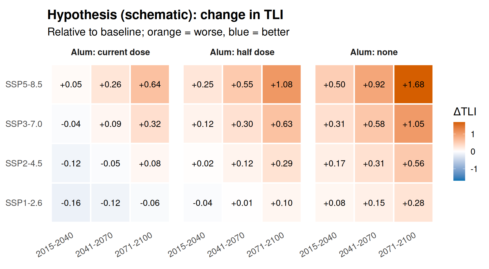
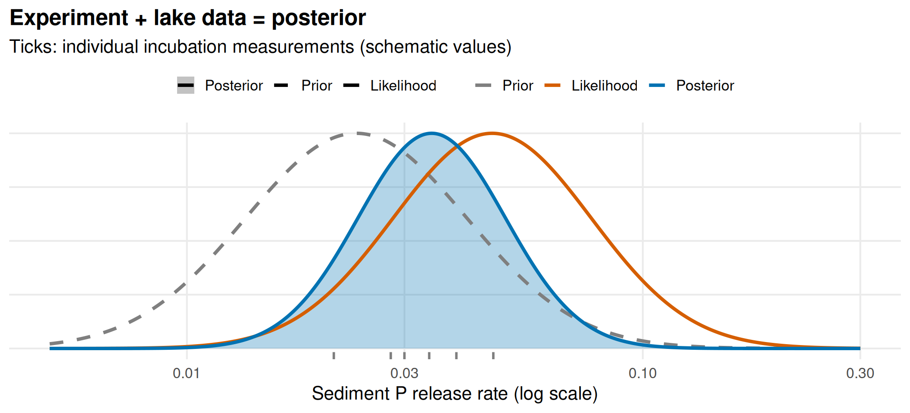
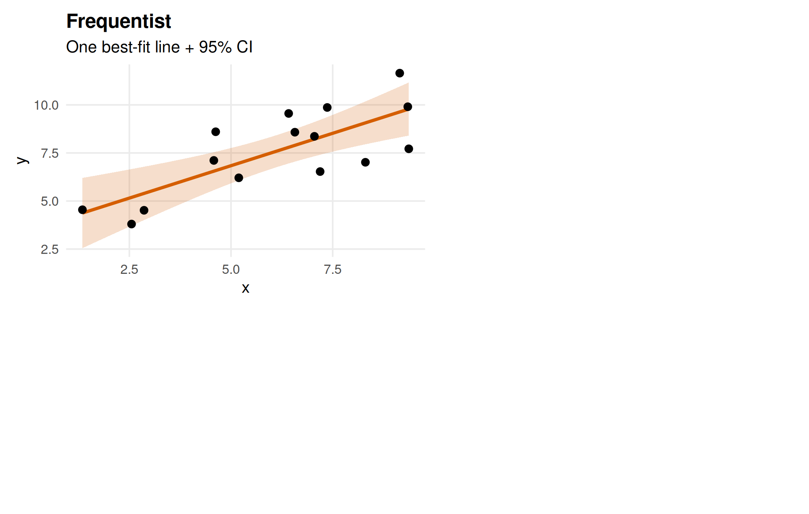
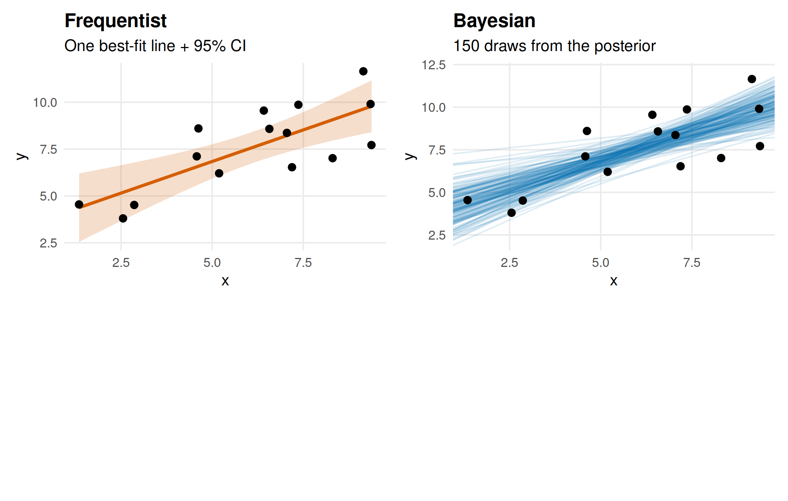
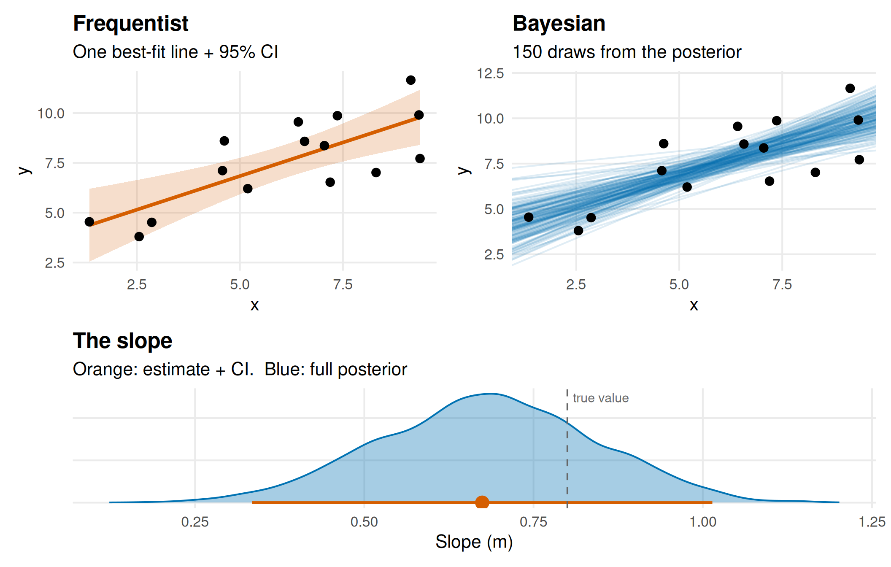
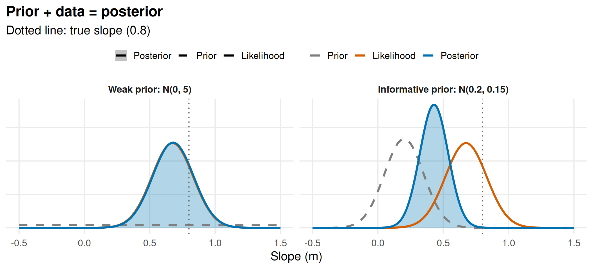

Overview of my Research
AI Acknowledgement
I used Claude to
About
Completed my PhD in 2020 at Dundalk Institute of Technology, Ireland. My research focused on water quality forecasting in lakes, and also climate change impacts on lake water temperature globally.
Post-doc at Virginia Tech, USA, developing teaching modules for Ecological Forecasting.
Currently a Lake Scientist at Limnotrack working on water quality modelling and management.
Where I have worked
Short version
Climate change may increase the length and number of stratification events in Lake Rotorua, driving nutrient loading and algal blooms.
Alum dosing has been shown to reduce phosphorus and could help mitigate those climate effects.
Lake Rotorua monitoring sites
[Insert tmap map]
What is Plan Change 10?
Plan Change 10
Bay of Plenty Regional Council rules for managing nitrogen loss in the Lake Rotorua groundwater catchment. Gives effect to the RPS target of a 435 tN/yr sustainable lake nitrogen load by 2032 (needed for a TLI of 4.2).
PC 10 Lake Modelling
To help answer questions:
Does 435 tN (and the nominal 37 tP/yr external load) still hold under climate scenarios?
Alum dosing efficacy and risk under future climate.
Sensitivity of the N-P balance.
Model validation.
How it all fits together
graph LR D[Data] --> M[Lake Modelling] A[Alum dosing] --> M C[Climate change] --> M N --> M M --> N[Nitrogen loading] M --> A M --> P[N:P balance] P --> N M --> V[Model validation] D --> V M --> S[Scenarios] D --> N C --> S A --> S
Where to next?
- Lake Modelling (~6 min)
- Data (~6 min)
- Alum dosing (~6 min)
- Climate change (~6 min)
- Wrap up: synthesis
Alum dosing
Where to start
Lake Modelling
Where to start
- What is the question we are trying to answer?
How will Lake Rotorua water quality change under future climate?
To what extent does the stream alum dosing affect water quality?
Hypothesis Figure

Workflows
Gather data
Synthesise data
Model selection
Configuration
Sensitivity Analysis
Calibration
Assessment
Scenario simulations
Synthesis
Personal Workflow
Key components:
R packages
targetspipelineProject website
R packages
Developed multiple packages:
AEME - Building and running models
aemetools - Sensitivity analysis and calibration tools
bathytools - Bathymetry and hypsography tools
ltapi - Limnotrack API
metscale - Climate data processing and downscaling
targets pipeline
targets is an R package for building reproducible pipelines. It tracks dependencies and only reruns steps that need updating.
+ rotorua_inflow_list_matrix declared [1 branches]targets pipeline
Alternative to:
01_gather_data.R
02_synthesise_data.R
03_model_selection.R
03b_fix_model.R
04_configuration.R
Project Website
- Helpful for communicating with collaborators and stakeholders.
- Built with Quarto and Reveal.js.
- Uses data and
targetsto automatically generate figures and tables.
Models
1-dimensional Models
Key assumptions:
- Horizontal variation is negligible
General Lake Model coupled with Aquatic Ecodynamics modelling library (GLM-AED)
GLM

Source: AED
GLM
Water Balance
Heat Balance

Source: AED
Thermal structure
- Stratification
Sensitivity Analysis & Calibration
Model Assessment
“I know that I know nothing” - Socrates
Model Assessment 2
Important to relate this to your modelling question
Frequentist vs Bayes
Frequentist
- There is one true value of the parameter, and we are trying to estimate it.
Bayesian
- There is a distribution of possible values for the parameter, and we are trying to estimate that distribution.
Bayes’ theorem
\[ \underbrace{\color{#0072B2}{p(\theta \mid \text{data})}}_{\color{#0072B2}{\text{posterior}}} \;\propto\; \underbrace{\color{#D55E00}{p(\text{data} \mid \theta)}}_{\color{#D55E00}{\text{likelihood}}} \;\times\; \underbrace{\color{#7f7f7f}{p(\theta)}}_{\color{#7f7f7f}{\text{prior}}} \]
For our regression, \(\theta = (m, b)\)
Reading the formula
- Prior: what we believed before the data
- Likelihood: how well each value explains the data
- Posterior: our updated belief
The posterior is a compromise between the prior and the data.
Bayes in lake calibration
Example parameter: sediment phosphorus release rate
| Prior | Measured sediment P flux from [student]’s core incubations |
| Likelihood | How well simulated TP, chlorophyll-a and bottom oxygen match the lake monitoring data for each value |
| Posterior | The values consistent with both the experiment and the lake record |
Prior, likelihood and posterior

Example: Linear regression
We have a set of data points (x, y) and we want to fit a linear model y = mx + b.
For the Frequentist approach, we would find the best-fit line that minimizes the sum of squared errors. We would then report the estimated slope (m) and intercept (b) along with confidence intervals.
For the Bayesian approach, we would specify prior distributions for m and b, and then use the data to update those priors to posterior distributions. We would then report the posterior distributions for m and b, which give us a range of plausible values for the parameters.
Frequentist: one best-fit line

Bayesian: many plausible lines

What each approach reports

Example: Linear regression figure 2

Frequentist vs Bayes (easy version)

Source: xkcd #1132 by Randall Munroe, CC BY-NC 2.5
Calibrating Lake Models
Use a similar logics
PEST++
Connections
Data
What, where, when, how and why
FAIR Data Principles
Data should be:
- Findable
- Accessible
- Interoperable
- Reusable
Read more (here)[https://www.nature.com/articles/sdata201618]
What data is needed for the Lake Rotorua model?
graph TD classDef cat fill:#f5f5f5,stroke:#333333,stroke-width:1px; classDef model fill:#D55E00,color:#ffffff,stroke:#333333,stroke-width:2px; classDef climate fill:#0072B2,color:#ffffff,stroke:#333333,stroke-width:1px; OBS["Observations<br/>lake_level, rotorua_inflow,<br/>alum_dosing, buoy and CTD data,<br/>chem_data, light_data"]:::cat MET["Meteorology<br/>niwa_met_daily,<br/>niwa_met_hourly_aeme"]:::cat SPAT["Spatial<br/>lake shape, lake_meta,<br/>depth_contours"]:::cat CFG["Model config<br/>corr_hyps, glm_sed_param,<br/>meas_param, aed_alum_params"]:::cat GCM["GCM / CMIP6<br/>cmip6_metadata, gcm_point_data_df"]:::climate M["GLM-AED Model"]:::model OBS -. calibration and validation .-> M MET --> M SPAT --> M CFG --> M GCM -. forcing - see Climate module .-> M click GCM "#climate-core" "Go to Climate change module"
Categories match the targets pipeline’s data inventory (data_inventory_html)
Lake observations
- Lake level — sub-daily, QC-coded · BoPRC hydrometric network
- Buoy profiler — temperature, DO, chlorophyll · LERNZMP API
- Buoy met station — wind, air temp, humidity, radiation, rain · LERNZMP API
- CTD depth profiles — full record · BoPRC
- Lake chemistry — nutrients, chl-a, turbidity, Secchi, 1989–2025 · BoPRC
Source/access detail: data.qmd
Catchment & climate forcing
- Meteorology — NIWA station #1770, daily + hourly · CliFlo
- Inflows — tributary flow & water quality, from Chris McBride’s prior DYRESM catchment-load modelling
- Alum dosing records — daily dose to the Utuhina & Puarenga streams · BoPRC operational records
CMIP6 climate projections feed in here too — covered in the Climate change module.
Spatial & model setup
- Lake polygon, depth contours, hypsography — LERNZMP API (lake_id 11133)
- Base AEME model object — physical configuration, existing parameterisation
- Sediment zone heights — derived from bathymetry + observed buoy/CTD temperature
Student research behind the parameters
Kaylee Campbell — internal loading study (repeat of Bergen 2004)
- Measured sediment O₂/N/P flux rates by depth zone
- Feeds the AED sediment diagenesis module (
meas_param)
Sreya Sanila (2026) MSc thesis, University of Waikato
- Jar tests & video floc-settling measurements across Lake Rotorua and three other dosed waters
- Directly parameterises the AED alum module: settling velocity, binding stoichiometry, pH response
Campbell attribution per code comments, unconfirmed — verify before citing externally
Climate change
Couple Model Intercomparison Project Phase 6 (CMIP6)
CMIP6 will address three broad questions:
How does the Earth system respond to forcing?
What are the origins and consequences of systematic model biases?
How can we assess future climate changes given internal climate variability, predictability, and uncertainties in scenarios?
Scenarios: Shared Socioeconomic Pathways (SSPs)
Impact Modelling
Scenario Design
What can we actually say?
Uncertainty is everywhere
Every result so far carries uncertainty from at least one source.
Observation uncertainty
Limits of detection
Sensor measurement accuracy
Sensor drift/fouling etc.
Climate uncertainty
Multiple GCM’s